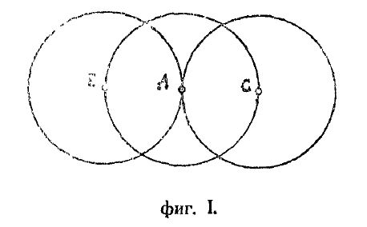

Беседа 1708 от 3877 · Беинса Дуно
Оставената торба
На фигурата имате три окръжности А, В, С, които се пресичат взаимно. Всички знаете, какво нещо е окръжност и какво - кръг. фиг.1

Мнозина се запитват, на какво се дължат противоречията в живота. Когато субективните, т.е. вътрешните възгледи на човека, се стълкновят с обективните, т.е. с външните възгледи на Бога и на разумната природа, непременно се явяват противоречия. Значи, вътрешният свят на човека е външен свят на Бога. Ако излезе от своя център, човек влиза вече в центъра на Божествения свят. Остане ли в своя център, той е във външния свят на Бога, в периферията на Божествения свят. И обратно, когато се движи по периферията на своя живот, той минава през центъра на Божествения свят. В това време човек мисли, че е някакво божество, иска да прави това, което е достояние само на Бога. Така, именно, той изпада в противоречие със себе си. Много естествено, никой човек не може да направи това, което Бог върши. - Какво трябва да прави човек, за да излезе от противоречията си? - Да съгласува своите субективни мисли и желания с обективните мисли и желания на Бога. Невъзможно е Бог да следва пътя на човешките мисли и желания. Човек е проява на Бога, но не и начало на Неговия живот. Следователно, той трябва да върви по пътя на Бога, а не Бог по неговия път. Някой пита, защо работите му не се нареждат добре. - Защото е в стълкновение с външния живот на Бога. - Защо имам големи мъчнотии? - Защото си в стълкновение с външния живот на Бога. Ако се движиш съзнателно по окръжността А, ще намериш хиляди възможности да реализираш своите мисли и желания, както и своя идеал.
В Божествения живот има две противоположни посоки на движение: едната посока е от В към А, а другата - от С към А. Това показва, че в природата има известно отношение между един силен и един слаб момент, между една разумна и една неразумна сила, между доброто и злото, между истината и лъжата. - Кога лъже човек? - Когато обещава на хората неща, които никога не може да направи. Някой казва, че ще ви направи щастливи. В същност, никой никого не може да направи щастлив. Щастието е в ръцете на Бога, а не в човешките ръце. Човек себе си не може да направи щастлив, че другите ще ощастливи? Как може, нещастният да прави другите щастливи? Как може, слабият да прави другите силни? Как може, бедният да прави другите богати? Каквито обещания и да ви дават обикновените хора, не се лъжете от техните думи. Това не е лъжа, но неразбиране на нещата. Лъже онзи човек, който обещава нещо, което може да направи, а не го прави. Не може да наречеш лъжец онзи, който ти обещава богатството на цялата земя. Преди всичко, земята не е негова; той няма право да разполага с нейното богатство. Този човек може да се нарече глупец, но не лъжец. Като знаете това, не говорете такива неща нито на себе си, нито на своите ближни. Защо ще си въобразяваш, че можеш да вдигнеш земята на гърба си?
Опитвал ли си да носиш земята на гърба си? Първо опитай, после говори. Ще кажеш, че си ходил на слънцето. Как си ходил: с ума, със сърцето или с тялото си? Трябва да говориш само онова, което си опитал и си се уверил, че сам можеш да го направиш. Само онзи е ходил на слънцето, който си е послужил и с ума, и със сърцето, и с тялото си. - Аз познавам Бога. - Как Го познаваш: с ума, със сърцето или с тялото си? Истинско, пълно познаване на Бога подразбира познаване по ум, по сърце и по тяло, т.е. с цялото си естество. Може ли да познаваш Бога с тялото си? Какво означава тялото? Под "тяло" разбираме външна проява на душата. Тялото представлява външната, обективна проява на душата. Никой не може да разбере и познае душата вън от проявите на ума, на сърцето и на тялото. Следователно, душата има три обективни прояви: в умствения свят - чрез вътрешната природа на ума, в духовния свят - чрез вътрешната природа на сърцето, във физическия свят - като вътрешни сили на тялото.
И тъй, душата представлява външната и вътрешната същина на човека. Тя присъства и в съзнанието, и в ума, и в сърцето, и във волята на човека - навсякъде и във всичко. Тя определя нещата, но нея никой не може да определи. Тя присъства и в духа на човека. Ако някой се опита да и даде форма, това значи, да я ограничи. А душата не се ограничава. Според някои, душата има яйцевидна форма. Такава е формата на човешкото тяло, а не на душата. Където душата присъства, там има вечно движение, вечна работа. Следователно, никой не е видял душата, но има представа за нейните прояви. Казано е в Писанието: "И вдъхна в ноздрите му дихание на живот, и стана человек жива душа." Това значи: и започна човек да диша, да мисли, да чувствува, да се движи и да работи. Ще кажете, че първият човек бил лесно създаден. Достатъчно било да му се вдъхне въздух. Ако наистина е лесно това, опитайте се и вие да вдъхнете въздух в нещо, да видите, какво ще излезе. Знаете ли, какво представлява диханието на Бога и каква сила се крие в него?
Следователно, когато става въпрос за диханието на Бога, трябва да гледате на него като на свещено нещо. Ако чрез въздуха, който обикновеният човек вдишва и издишва, се извършват велики процеси в организма, колко по-велики и възвишени неща стават от диханието на Бога. Веднъж само вдъхна Бог в ноздрите на човека, и той стана жива душа. При това, този процес не е еднократен. Много пъти Бог внася своето дихание в човека. В който момент престане този процес, човек умира, т.е. животът в него се прекъсва. Който не разбира истината, мисли, че Бог само веднъж е вдъхнал живот в първия човек. За да го оживи, Бог, наистина е вдъхнал само веднъж, но оттогава до днес Той не е престанал да внася диханието си в човека и няма да престане да вдъхва. Майката само веднъж ли кърми детето си? Много пъти го кърми тя, докато стане истински човек. Диханието на Бога е необходимо за всеки човек, както млякото за гръдното дете. Следователно, процесът на Божественото дихание е непреривен, както и кърменето на малкото дете. Като знаете това, поддържайте връзката си с Бога, за да могат Неговите енергии да се втичат във вас. И тогава, като се питате, какъв е смисълът на живота, ще си отговорите: Смисълът на живота се заключава във връзката на човешката душа с Бога. - Защо нямам успех в живота си? - Защото си скъсал връзката с Бога. - Какво трябва да направя, за да подобря живота си? - Да възстановиш тази връзка.
Представете си, че за вас специално е оставена на определено място торба със злато, която сами трябва да си вземете. Отивате да вземете торбата, но в същия момент излизат отнякъде разбойници и ви гонят да вземат златото. Това е устроено нарочно, да ви изпитат, заслужавате ли Божественото благо, или ще се уплашите и ще избягате. Ако избягате от разбойниците и не вземете торбата, те ще се възползват от Божественото благо. В дадения случай, вие минавате за престъпник пред разбойниците, понеже не сте могли да използвате Божественото благо. Страхът от разбойниците показва, че сте скъсали връзката си с Бога. Който пази тази връзка, той не се страхува. Той знае, че при получаване на едно благо, винаги има изпитание и е готов да се справи с тях.
Какво се иска от сегашния човек? - Самообладание. По този начин могат да се реализират добрите желания. Който има самообладание, той се е справил със страха. - Какво допринася страхът? - Излишни тревоги. Ако пътуваш с параход по океана, трябва ли да се страхуваш да не стане някаква катастрофа? Страхуваш се да не се разбие парахода и да се намериш на дъното на океана. - Кой човек се страхува? - Който не е свързан с Бога. Който има отношение към Бога, преди да се качи на парахода, ще Го запита, да пътува ли с този параход, или да се качи на друг? Ако му се отговори положително, той няма защо да се съмнява. Ще влезе в парахода и, през каквито изпитания да мине, в края на краищата, ще излезе на спасителния бряг. Всичко може да стане с парахода, в който си ти, но няма да потъне. - Защо? - Защото Бог ти е позволил да пътуваш с него. Никаква сила в света не е в състояние да се противопостави на Божиите решения. Ако параходът потъне, това показва, че ти си влязъл в него без позволението на Бога. Казано е в Писанието: "Косъм от главата ви няма да падне без волята на Бога."
Следователно, вяра е нужна на съвременните хора, не умствена, но абсолютна вяра, в която няма никакви изключения. Какво означава вяра без изключения? Ако се качиш на параход в океана и се яви буря, параходът ще мине през големи люшкания, ще потъва във водата и ще излиза на повърхността, ще залива пътниците с вода, но пак ще излезеш на брега здрав и читав. И през всичкото време на изпитанието трябва да останеш тих и спокоен, с пълна вяра, че ще стигнеш до брега благополучно и ще кажеш: Минах през голяма опитност, но се убедих, че в Божиите обещания няма обратни решения. Ще кажете, че вярвате в Бога и в Христa. Мнозина вярват като вас, но важно е, как ще се справи всеки, като попадне в развълнувания океан. Вярваш си, но като те гонят разбойници, оставаш торбата със златото и бягаш. Това не е вяра. Истински вярващият трябва да остане на мястото си, разбойниците да минат покрай него и да не го докоснат. Това е вяра. Ако се уплашиш от разбойниците и избягаш ти сам се излагаш на страдания. Ще останеш около торбата си и ще кажеш на разбойниците: Тази торба е моя. Бог ми я е дал и не отстъпвам от нея.
Какво представлява торбата със златото? - Човешкият живот. Следователно, никой не може да вземе живота, даден от Бога. Нито смъртта може да отнеме живота на човека. - Ще умрем. - Кой ви е казал това? Питали ли сте Господа, ще умрете ли, или още ще живеете? Някой обикновен човек може да ви каже, че ще умрете, но неговото твърдение не е меродавно. Кой е умирал съзнателно и познава смъртта? Никой няма право да говори за неща, които не е опитал. Казано е в Писанието: "В който ден престъпиш Божия закон, ще умреш." Този закон има и обратен смисъл: "В който ден решиш да изпълняваш Божия закон, ти придобиваш живот." Който губи живота си, става недоволен и страда; който придобива живот, радва се.
И тъй, хората са недоволни, когато нещата стават така, както не ги очакват. Искаш да придобиеш богатство, но като започнат да те преследват апаши и разбойници, ставаш недоволен и казваш: Защо ми е такова богатство, което нарушава мира и спокойствието ми? Представи си, че твоето богатство не е в пари, но в някакво природно благо, от което се нуждаят всички хора. Ти имаш къща, близо до чист, планински извор. Минават и заминават пътници край къщата ти, и всеки търси вода, да задоволи жаждата си. Щом видят извора, приближават се до него и пият от водата му. Имаш ли право да отказваш на пътниците да пият от водата на твоя извор? Ако откажеш на някого, ти вършиш престъпление, за което ще отговаряш. Всеки, който дойде при твоя извор, ще го оставиш свободно да се напие и да си налее, колкото вода иска. В това се заключава изпълнението на Божията воля. Затова е казано: "Даром сте взели, даром давайте." Даром се дават Божиите блага, защото трябва да се върнат при Източника, от Който са излезли. Когато се говори за изобилие на благата, имаме предвид Божиите блага. Като знаете това, не спирайте пътя на Божествените блага.
Първата задача на човека е да се справи със своя вътрешен страх. Докато се страхува, той всякога ще бъде недоволен, че не е постигнал идеала си. Много естествено, страхът го заставя да бяга и да се откаже от торбата с благата. Ако някой се оплаква, че не е станал богат, силен, добър, това се дължи на неговата страхливост. - Защо не можах да стана поет, музикант или художник? - Защото си бил страхлив. Който е доволен от положението си и се радва на своите постижения, той е бил смел и решителен в живота си, пред нищо не се е спирал. Ето защо, ако не сте богати, учени, добри, силни, ще знаете, че причината за това е в самите вас, страхливи сте били; ако сте бедни и болни, страхливи сте били. Това е факт, който съм опитвал много пъти в живота и съм абсолютно убеден в него. Той е станал вече закон, в който няма никакво изключение.
Казано е в Писанието: "Страхливият не може да наследи Царството Божие." Какво представлява Царството Божие? - Сбор от блага, които Бог е определил за всички живи същества на земята. Следователно, ако си страхлив, не можеш да се ползваш от Божиите блага. - Как мога да се освободя от страха? - Като внесеш любовта в сърцето си. Тогава страхът ще остане отвън, а любовта - отвътре. Само така ще реализираш желанията си; само така ще бъдеш в съгласие с Божествения свят. Докато живееш със страх за утрешния ден, ти всякога ще бъдеш в стълкновение с Бога, с разумната природа. Извади страха вън от себе си, за да влезеш в хармония с живата природа и да се ползваш от Божието благословение. При това положение ще реализираш своите желания: каквото помислиш, ще постигнеш. Ако пожелаеш да имаш една колибка, веднага ще я придобиеш. Тя ще бъде като гайда: ту ще я свиваш, ту ще я надуваш. Можеш ли да се оплачеш от жилищна криза? Ще носиш колибката със себе си и, където те завари нощта, там ще останеш. Това значи, да прилага човек своето знание. Това значи, да бъдеш съвършен. Затова е казано в Писанието: "Бъдете съвършени, както е съвършен Отец ваш небесни." За съвършения всичко е постижимо.
В Божествения свят нещата се постигат само за даден момент. Това значи, Бог осигурява човека само за даден момент, а не за вечни времена. Имаш нужда от хляб в даден момент - ще го имаш; искаш да напишеш нещо, ще напишеш и ще се проявиш като писател, но само за даден момент; искаш да имаш къщичка, да си починеш, и това ще ти се даде, но само за момента. При това, моментът подразбира само известна област, известно направление. В един момент ще се проявиш само в известна област, а не във всички области и направления. Искаш ли в един момент да се проявиш във всички области, или да постигнеш всичките си желания, ти изпадаш в заблуждения и противоречия.
И тъй, всичко в живота е постижимо, когато поставите любовта отвътре, а страха - отвън. Така се придобива животът и безсмъртието. Следователно, когато сте в съгласие с Божиите закони, нищо не може да ви изненада; каквото и да ви се случи, ще знаете, че в един момент само ще се справите с мъчнотията си. Бог е във вечността. Той ръководи света и го оправя. Живейте без страх, за да запазите торбата със златото от ръцете на разбойниците. Пред любовта и безстрашието и най-големият разбойник отстъпва. Той слага оръжието си на земята и казва: Торбата е твоя, разполагай със златото си, както знаеш. Ако обичаш, можеш да дадеш и на мене нещо. Ти бръкваш в торбата и даваш на разбойника част от златото. Това подразбира истински отношения между хората. Когато имаш повече блага от своя ближен, дай му част от благата си, но доброволно.
Сега, бъдете внимателни, да не губите торбите си. За тези, които са ги изгубили, те не се връщат вече, но внимавайте, в бъдеще поне да не ги губите. Когато се качвате на параход, не губете вярата си. Като се натъквате на страдания, не се обезсърчавайте. Щом сте свързани с Бога, никаква сила не може да ви измести от положението, в което се намирате. Каквито бури и ветрове да ви брулят, параходът ви ще излезе благополучно на пристанището. Това, което желаете да стане, ще се изпълни. Това е закон, в който няма никакво изключение. - Как ще познаете, дали този закон действа в живота? Опитайте се да вземете торбата и ще видите, че разбойниците ще отстъпят пред вас. Така ще разберете, че те са ваши приятели, дегизирани, с цел да изпитат вярата и самообладанието ви.
Ще ви дам една нова песен, на чужд език, със следното съдържание:
Аин фаси, мекри заси, фин земру ашан меру суаси син месул сумаси зен фесул.
Чуждият и неразбран език показва, че някога, в далечното минало, вие сте изгубили благото което ви е дадено. Изгубили сте торбата, и днес я търсите.
Сега следват разбраните думи на песента:
В небесните ширини, в небесните глъбини; в небесните висини, где светлина обитава, и животът вечно се проявява.
Кога човек говори за небесните ширини? - Когато изгуби нещо. Тогава той става по-разумен, но торбата е отишла вече в ръцете на разбойниците. Стои човекът и мисли, как е станала тази работа, че торбата е вече далеч от него. Той не подозира, че причината е в неговия страх. Докато не се познава, човек страда, мъчи се и се запитва, защо идват страданията.
Страданията на хората са резултат на изгубената обич. Без обич и любов животът се обезсмисля. Любовта изключва страха, следователно, освобождава човека от тъмнината и ограниченията. Ако обичта и любовта ви не са в сила да изпъдят страха навън, те не са истински. - Как да се примирим със страданията? - Няма защо да се примирявате със страданията, но ще ги приемете, като неща, които идват от Бога. Следователно, всичко, което идва от Бога, е добро. Радост, или страдание, които идват от Бога, са добри и на място. Обаче, трябва да различавате това, което идва от хората, от онова, което идва от Бога.
За следващия път пишете върху темата: "Най-големият страх и най-голямата обич." Като развивате темата, ще се стремите да внесете нещо ново в разбирането си, а не както са разбирали хората преди вас. За всяко нещо се иска ново разбиране. И пророците са имали някакво разбиране за Бога, например, но вие трябва да се отличавате от тях. От вас се иска още по-ново разбиране, да се приближавате до разбирането на Христa за Бога. Нали минавате за християни? Вашето разбиране трябва да отговаря на момента, в който сега живеете. Новото има отношение към красотата в живота, а красотата - към настоящето. Наистина, важни са сегашните блага, а не миналите, които са изгубени вече. В много ями се събирало вода, от която мнозина са се ползвали, но важна е водата, която днес изтича от извора. Водата в ямите е мътна, нечиста, а от извора е прясна, чиста - всички се стремят към нея. На същото основание, казвам: Важно е, как Бог се изявява днес към нас, а не, как се е изявявал в миналото. Затова Павел казва: "Око не е видяло, и ухо не е чуло това, което Бог е приготвил за онези, които Го любят." Ако обичаш Бога, нито на ума, нито на сърцето ти ще дойде това, което Той е приготвил за тебе. Велика е любовта Му към всяка душа. Божията Любов е врата, през която ти ще минеш, за да влезеш в Божествения свят. Само така ти ще приемаш и предаваш Божиите блага. Следователно, обичта е съединителна връзка между човешката душа и Първата Причина. На тази връзка се дължи правилното развитие на човека.
2. Лекция от Учителя, държана на 7 октомври, 1931 г., София. – Изгрев.